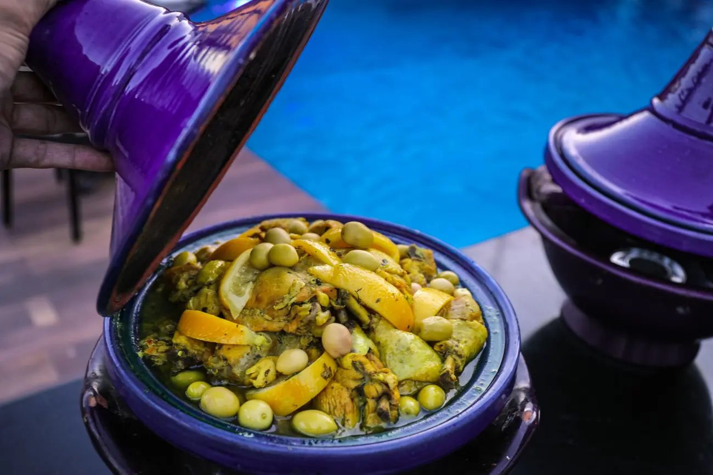
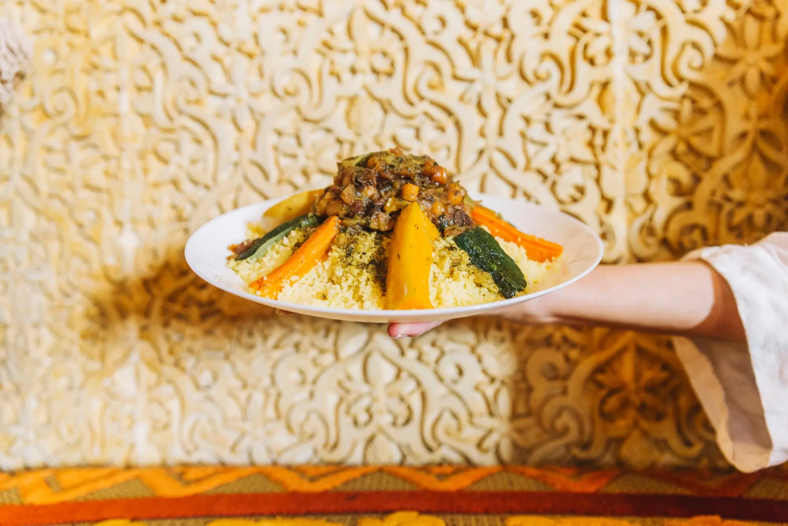
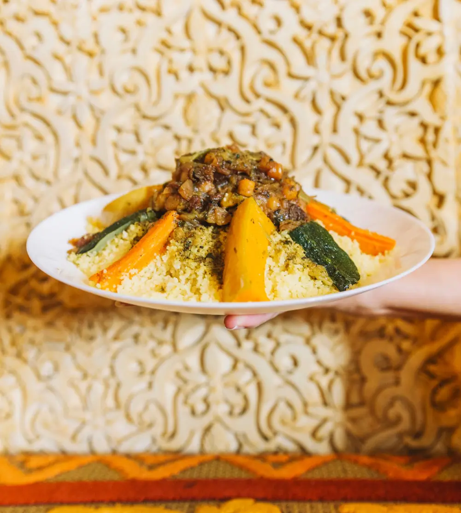
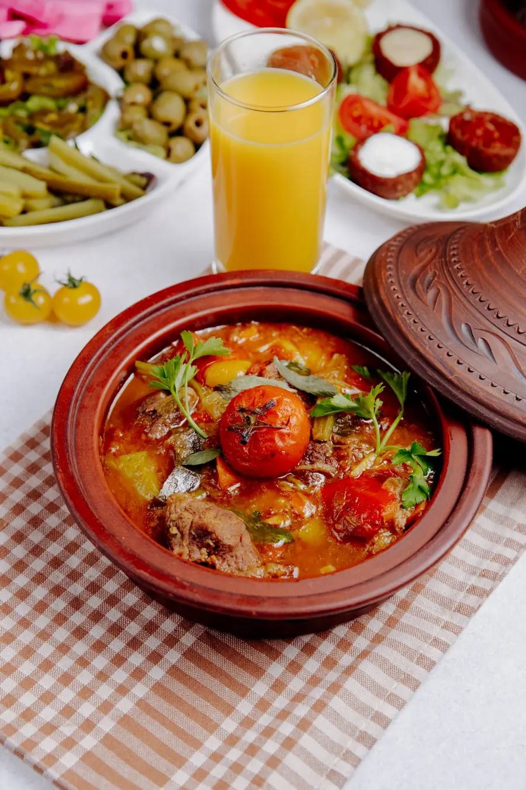
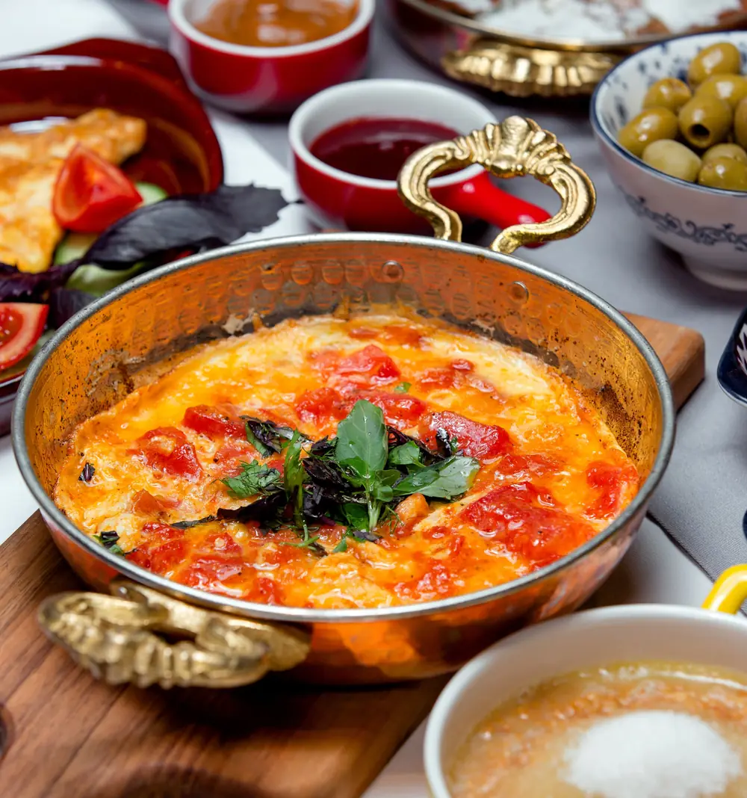
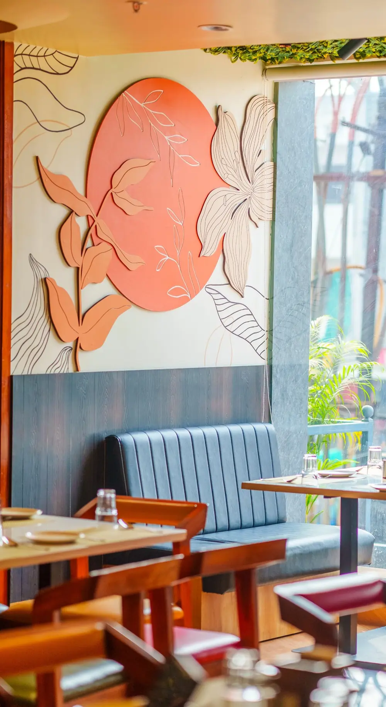
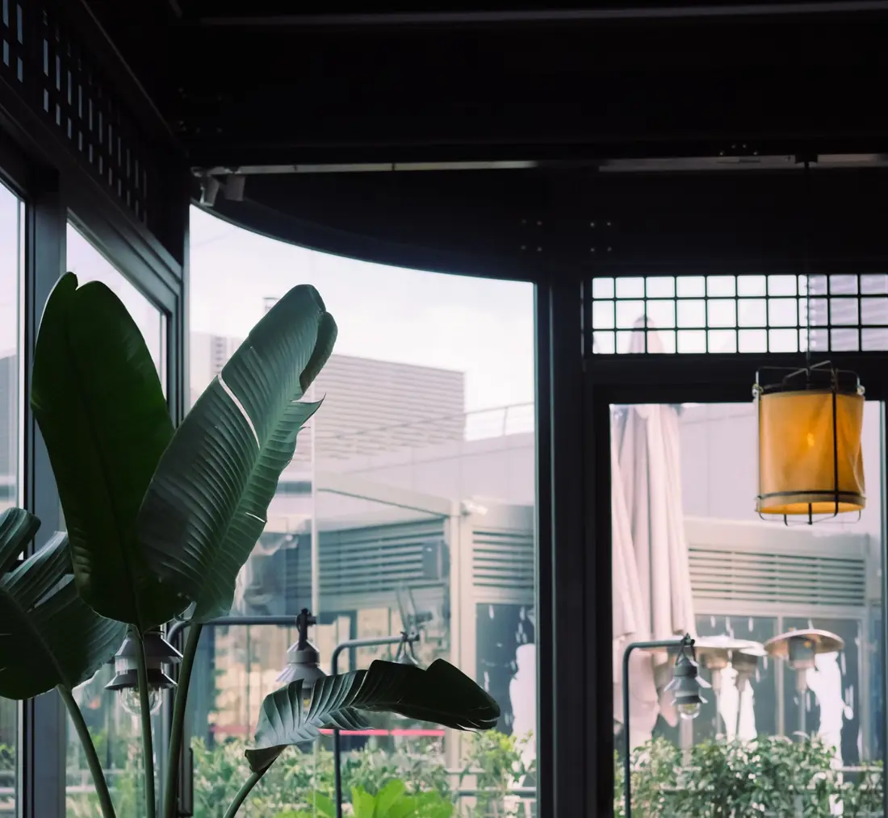
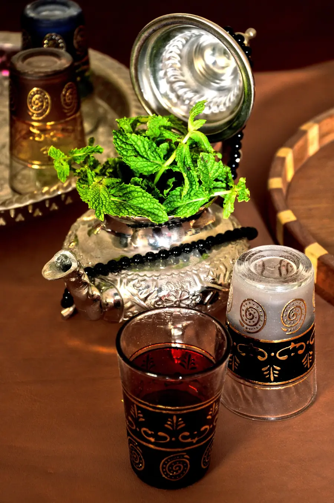

Tajine poulet, citron confit
Poulet fermier, olives violettes, citrons confits maison et coriandre fraîche.
Le plus commandé95 dh

Cuisine marocaine · Casablanca
Tajines mijotés quatre heures, couscous roulé à la main chaque vendredi et pâtisseries maison. Comme à la maison, mais sans la vaisselle.
Nos signatures
Des recettes de famille, des produits du marché du matin, et la patience de laisser mijoter.

Poulet fermier, olives violettes, citrons confits maison et coriandre fraîche.

Semoule roulée à la main, sept légumes, oignons caramélisés aux raisins et amandes.

Épaule d’agneau fondante, tomates rôties, pommes de terre et ras el-hanout.

La carte
Soupe de tomates, lentilles et pois chiches, dattes et chebakia.
Zaalouk, taktouka, carottes au cumin, betteraves à la fleur d’oranger.
Feuilletés croustillants à la viande hachée ou au fromage et herbes.
Tomates, poivrons, œufs mollets, cuite et servie dans sa poêle.
Le classique de Fès, préparé comme chez nos grands-mères.
Sucré-salé, cannelle, sésame grillé.
Boulettes de bœuf épicées, sauce tomate, œufs.
Selon la pêche du jour, poivrons et pommes de terre.
Végétarien, bouillon parfumé, pois chiches.
Agneau ou poulet, oignons caramélisés, raisins et amandes.
Vermicelles sucrés, cannelle et poulet caché à l’intérieur.
Feuilles croustillantes, crème à la fleur d’oranger, amandes.
Pâtisseries maison, servies avec un thé.
Fraîche et légère.
Le verre, ou la théière pour deux à quatre personnes.
Orange, ananas, avocat-amande selon la saison.
Moitié café, moitié lait, comme à Casa.
L’ambiance


« Le vendredi, il faut réserver : le couscous part avant 14h. »
Notre conseil, pas une publicité.Commandez sur WhatsApp avant 11h30, votre tajine est prêt à midi. Livraison possible dans le quartier.
Commander sur WhatsApp
| Lun – Jeu | 12h–15h · 19h–23h |
| Vendredi | 12h–15h · 19h–23h30 |
| Samedi | 12h–23h30 |
| Dimanche | 12h–23h |